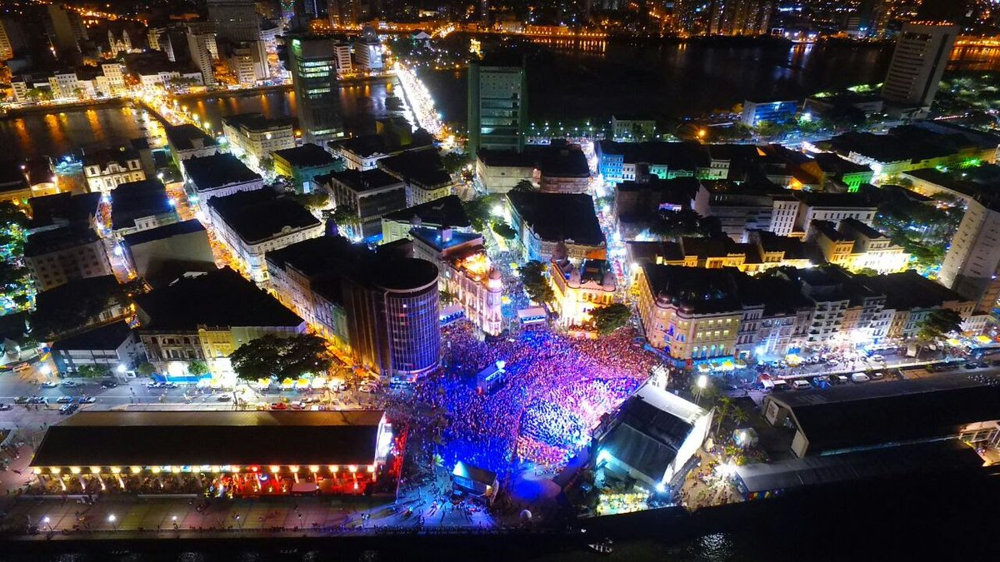

O que é o Marco Zero de Recife?
O Marco Zero de Recife é um monumento histórico que marca o início da cidade, datado do século XVI. Ele fica localizado na Praça Rio Branco, próximo ao porto e ao Mercado de São José.

História
O Marco Zero de Recife foi erguido pelos portugueses no ano de 1537, quando a cidade ainda era uma pequena vila de pescadores. A partir dali, Recife cresceu e se tornou uma importante cidade portuária.
Atualmente, o monumento é um ponto turístico e cultural, sendo palco de diversos eventos e festividades ao longo do ano.
